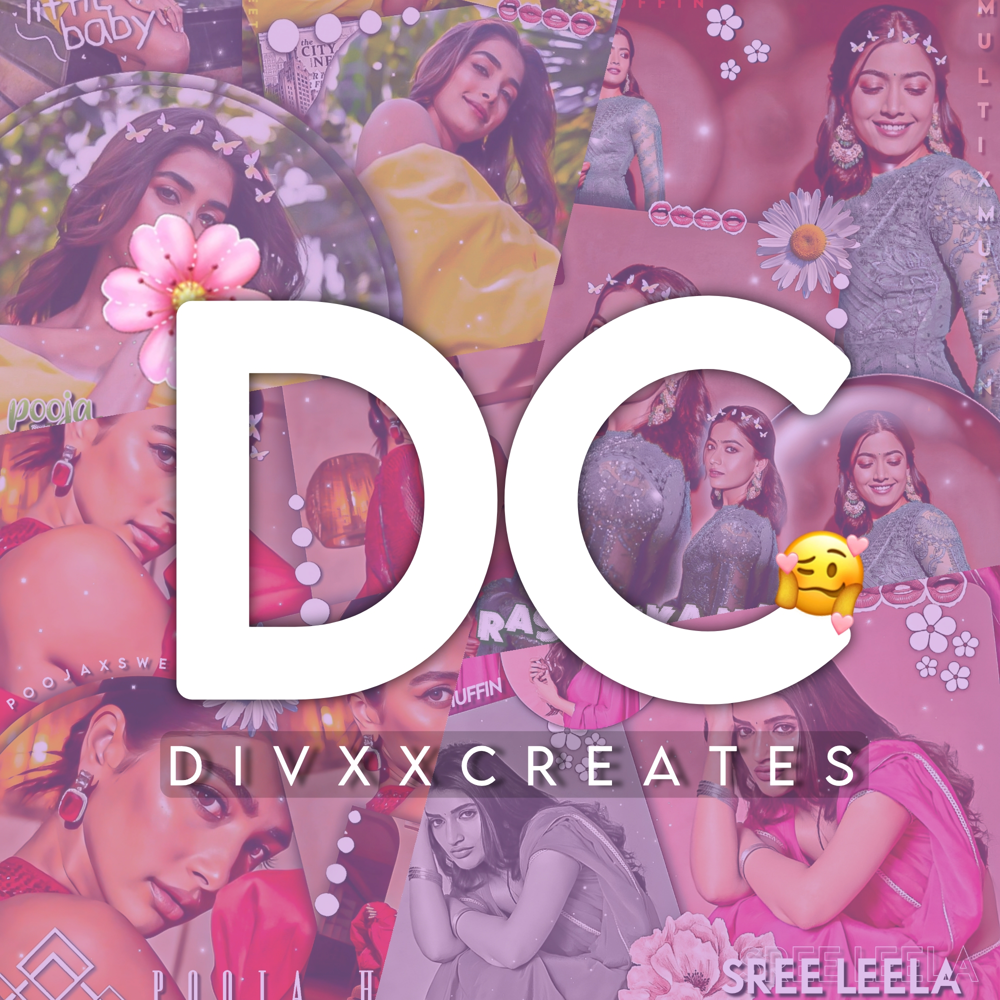

DIVXX CREATES🌷
HELPING PAGE FOR FANPAGES, EDITORS AND YOUTUBE TUTORIALS OF PICSART ,POLARR,LIGHTROOM,REMINI,IBIS PAINT WILL BE IN MY YOUTUBE CHANNEL.
HERE ARE TUTORIALS ,IDEAS FOR EDITS,STUFFS LIKE TEXTURES AND OVERLAY,APPS AND THEIR USE IN EDITING, TIPS FOR IMPROVING AND MY INSTAGRAM HANDLES.